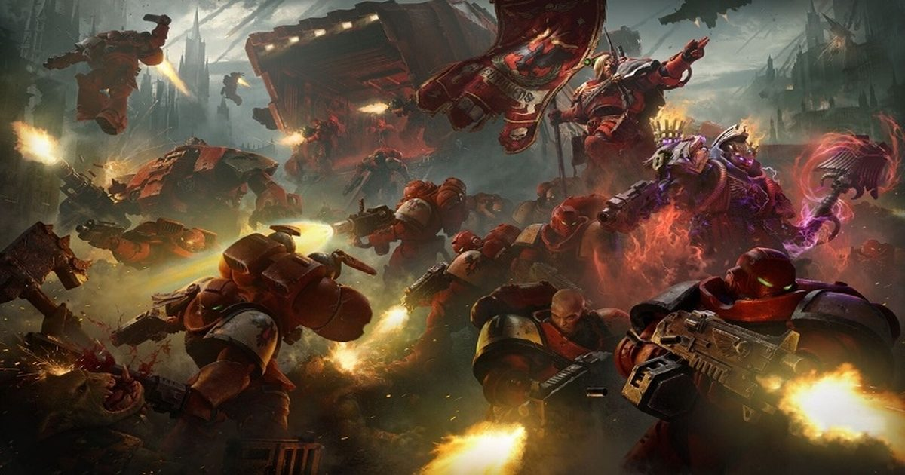

Как подготовить кожу к сезону: чек-лист потребностей и поддержка барьера
Смена сезона требует пересмотра ухода, как обновление конфигурации перед запуском ресурсоёмкой задачи. Важно оценить состояние барьера и выбрать средства, соответствующие текущим потребностям кожи, чтобы избежать сбоев в работе защитных механизмов.
Оценка состояния кожи перед сменой ухода
Первый шаг — диагностика текущего состояния гидролипидной мантии и уровня гидратации. Визуальный осмотр и анкетирование позволяют выявить признаки обезвоженности, воспалительных элементов или нарушения барьерной функции, которые диктуют выбор тактики ухода.
Без понимания исходных данных риск подобрать неактивные или, наоборот, слишком агрессивные компоненты возрастает. Подобная ошибка приводит к хроническому раздражению, чувствительности и ухудшению внешнего вида кожи, что требует длительного восстановления.

Базовый уход: очищение и восстановление барьера
Важно помнить, что даже идеально подобранный базовый уход не дает мгновенного визуального эффекта. Результат накапливается постепенно, укрепляя архитектуру кожи изнутри, что аналогично оптимизации системных процессов для стабильной работы сложных задач.

Активные компоненты: введение по показаниям
В периоды адаптации к активным компонентам кожа временно становится более уязвимой к ультрафиолету и температурным перепадам. Это штатная реакция, требующая усиленной защиты и снижения интенсивности воздействия до полной толерантности.
Фотощит и режим дня как системное обеспечение
Интеграция этих привычек в повседневность работает как фоновый процесс, обеспечивающий стабильность всей системы. Игнорирование базовых потребностей организма делает любой уход симптоматическим и неэффективным в стратегической перспективе.
Несоответствие исходного текста теме статьи
Предоставленный исходный текст посвящён системным требованиям игры Warhammer 40,000: Dawn of War 4 и не содержит никакой информации о косметологии, уходе за кожей, процедурах или консультациях специалистов. Написание раздела для статьи о подготовке кожи к сезону на основе этого материала невозможно, так как темы не пересекаются ни по терминологии, ни по принципам подбора ухода, ни по критериям пригодности процедур.
Для полноценного дополнения статьи необходим исходный текст, касающийся дерматологии или эстетической косметологии: описание сезонных изменений кожи, протоколов восстановления барьера, показаний и противопоказаний к процедурам, роли консультации врача или косметолога. Без релевантных данных любые рекомендации будут вымышленными и нарушат принцип доказательного подхода.
Проверка «системных требований» кожи перед сменой сезона
Как разработчики игры публикуют системные требования заранее, чтобы игроки проверили совместимость оборудования, так и коже полезен предварительный аудит перед сменой ухода. На консультации стоит обсудить текущее состояние барьера, реактивность, наличие воспалений или засушенных участков — это аналог проверки видеокарты и объёма памяти. Специалист поможет понять, какие активные компоненты «запустятся» без сбоев, а какие могут вызвать «конфликт драйверов» в виде раздражения или перхоти. Важно также уточнить, как менять режим ухода постепенно, не перегружая кожу множеством новшеств сразу.
Подготовка к сезону не подходит тем, у кого барьер уже скомпрометирован: активная ретиноидовая терапия, пилинги или агрессивное очищение в этот период только усугубят дефицит липидов. Результат зависит от исходного ресурса кожи, регулярности базового ухода и соблюдения фотозащиты — так же, как стабильность игры зависит от соответствия «железа» минимальным требованиям и отсутствия фоновых процессов, жрущих ресурсы. Если кожа в стадии обострения, лучше отложить внедрение активов и сосредоточиться на восстановлении, дождавшись «патча» в виде нормализации гидратации и снижения воспалительного фона.
Коротко: Качественная подготовка кожи к сезону строится на диагностике, мягком базовом уходе, пошаговом введении активов и системной фотозащите. Регулярность и соответствие текущим потребностям важнее интенсивности разовых воздействий.
Какие изменения в уходе вы вносите с приходом нового сезона и как коже реагирует на них?